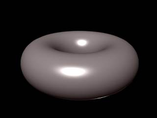

8.1 An Effective Algorithm for Generating Torus Objects
Here at Idlation '88 Martti (nimi muutettu) came up with an idea how to generate torus-like objects: simply sin(3b*5xt/sqrt(log(rand(4)+5.3z*y))-e^4(32-f5*cos(tan(sin(cos(b)-2))))^(-1)). You can define the variables as you wish, it won't make sense in any case. An effective optimization trick (you won't notice any difference in the result) is to use rand(). Pseudo:[generate vertices] ; here we generate the verticesA working scheme example:
[use them] ; here we use them(define (make-vertex x y z)Please notice the flexibility and usability of Scheme for this particular purpose.
(list 'vertex x y z))(define (get-coor)
(- (random 100) 50))(define (make-torus vertices)
(if (<= vertices 0) '()
(cons (make-vertex (get-coor)
(get-coor)
(get-coor))
(make-torus (- vertices 1)))))(define (get-face vertices)
(list 'face (random vertices) (random vertices) (random vertices))); example:
(make-torus 10)
(get-face 10)
8.2 Phong Illumination Model Using Gamma Approximation and Evenly Hashed Gaussian Distribution not Forgetting LaRusse Fireclouds
As you all know, real Phong shading is far too costly to perform in realtime, so we need to find a good approximation function. Our calculations have proved that any random number from 3.27 to 15.1+3i filtered with evenly hashed Gaussian Distribution and dropped through a bunch of LaRusse Fireclouds brings a good approximation which can be compared to gouraud shading (ok, you can compare anything to anything). Unfortunately, the operation takes 10 times more time than calculating real phong but hey, that's the cost!
8.3 Coding Tips by our Graphician
1. The most important thing to have is an online-tutorial. We recommend a good irc-client and that you should get to know someone who unlike you really knows about coding. Then you can ask anything until he/she gets bored and you have to find a new friend. Remember to use a fake name so you won't get more llama-points than you already have.2. Don't upset the voodoo-gods. If you upset them, you're code won't work no matter what you do. Please read chapter 23.1 "How to not upset voodoo-gods."
3. Talk about your coding with someone who knows even less about computers than you do so that you won't feel yourself so stupid. Your mother or family pets will do fine.
4. Have a life. If you have a life your code isn't that important to your social status. Hang around with women no matter how disgusting that might feel.
5. Go to make your military service. If you're in the army, no one really expects that you're gonna finish any code in next 6-12 months. During that time you can use your every spare time for trying to learn something you claim you already can do.
6. Backup your code normally but tell everyone your computer crashed and you lost everything that you had written in last year. That gives you more time.
7. Read a book called "PC Kaeyttaejaen Kaesikirja" which author is Petteri Jaervinen, a famous finnish guru. Try to find the real roots of wisdom and connect yourself to higher spirit.
8.4 How to code your own Hubris-membah -Tamagotchi
Okay, all you little lamers out there, here's a tutorial on how to code your own Tamagotchi featuring a Cute Little Hubris-membah! Okay, if you have DOS 6.x, just go to the command prompt and type 'QBASIC'. The type the following two lines to the editor and you're ready to run your Tamagotchi and after that you can check how your Ica, Tweeker, Delic or < whoever you decide the little bastard to be > is doing.10 PRINT "He's idling"
20 GOTO 10